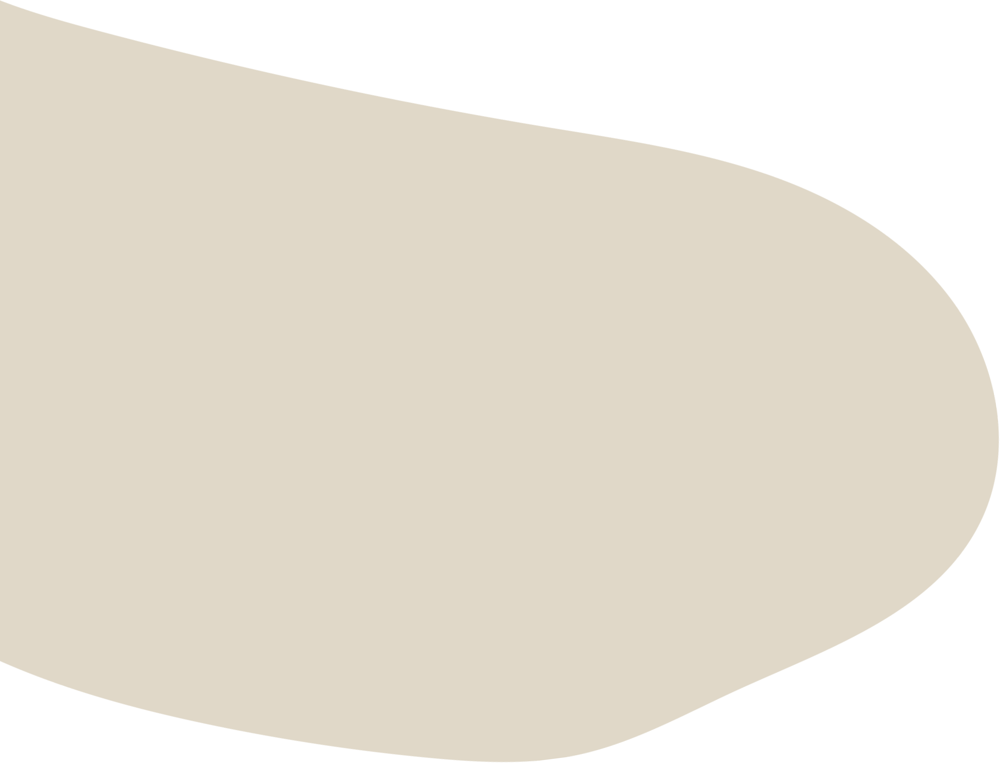

Weltweit sind zweihundert Millionen Frauen von weiblicher Genitalverstümmelung betroffen. Weitere drei Millionen Mädchen laufen Gefahr, Opfer dieser Prozedur zu werden.
Weibliche Genital-verstümmelung
Weibliche Genitalverstümmelung ist auch als FGM (Female Genital Mutilation) bekannt. Sie beinhaltet die teilweise oder vollständige Entfernung der äußeren weiblichen Genitalien oder die Beschädigung der Geschlechtsorgane ohne medizinische Gründe.

.png)
Warum wird die Beschneidung bei Frauen durchgeführt?
Die Gründe für FGM sind vielschichtig. Darunter sind soziale Normen, Religion, Traditionen und gesellschaftlicher Druck.


.png)
Risiken und Folgen der Beschneidung bei Frauen
Die Praxis hat keine gesundheitlichen Vorteile und verursacht lebenslange körperliche und seelische Leiden . Die Betroffenen erleben Einschränkungen im Lustempfinden, Schmerzen während des Geschlechtsverkehrs und der Geburt sowie akute lebensbedrohliche Komplikationen.


Rechtslage zur Beschneidung bei Frauen
Obwohl FGM als schwere Menschenrechtsverletzung anerkannt ist, sind bis 2030 etwa achtundsechzig Millionen Mädchen gefährdet. Genitalverstümmelung ist in allen EU-Mitgliedstaaten strafbar. Es besteht die Möglichkeit, im Ausland durchgeführte Genitalverstümmelungen zu verfolgen. Dennoch leben rund 600.000 beschnittene Frauen in der EU und 180.000 Mädchen sind gefährdet.
.png)

.png)
Risiken und Folgen der Beschneidung bei Frauen
Die Praxis hat keine gesundheitlichen Vorteile und verursacht lebenslange körperliche und seelische Leiden . Die Betroffenen erleben Einschränkungen im Lustempfinden, Schmerzen während des Geschlechtsverkehrs und der Geburt sowie akute lebensbedrohliche Komplikationen.

Solltest du selbst Hilfe brauchen oder jemanden kennen, der Hilfe benötigt, kannst du dich an diese Hilfsorganisation wenden:

Beratungsstelle bei weiblicher Genitalverstümmelung